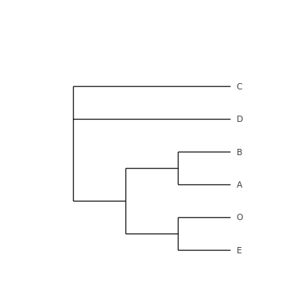
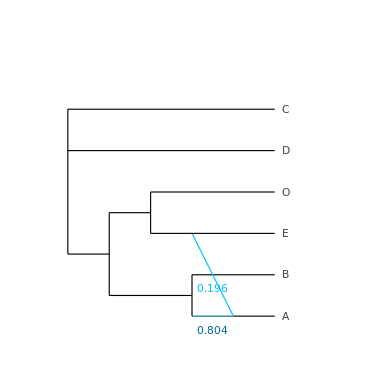
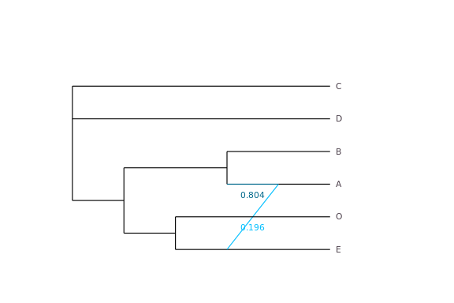
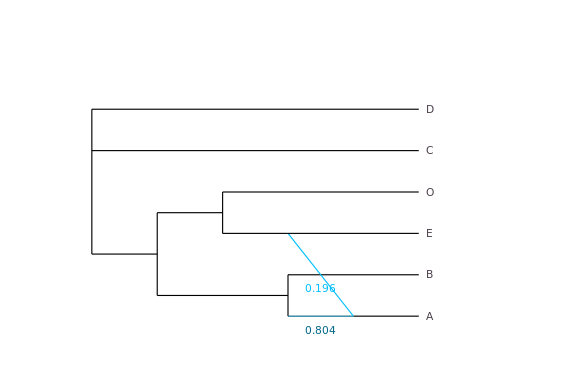
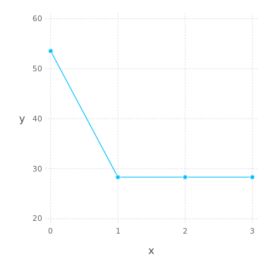

Getting a Network
Network Estimation
SNaQ implements the statistical inference method in Solís-Lemus and Ané 2016. The procedure involves a numerical optimization of branch lengths and inheritance probabilities and a heuristic search in the space of phylogenetic networks.
After Input for SNaQ, we can estimate the network using the input data raxmlCF and starting from tree (or network) astraltree. We first impose the constraint of at most 0 hybrid node, that is, we ask for a tree.
net0 = snaq!(astraltree,raxmlCF, hmax=0, filename="net0", seed=1234)
Part of the screen output shows this:
MaxNet is (C,D,((B,A):1.395762055180493,(O,E):0.48453400554506426):10.0); with -loglik 53.53150526187732
This parenthetical (extended Newick) description is not very human-friendly, so we plot the tree:
plot(net0)

We can use this tree as a starting point to search for the best network allowing for at most hmax=1 hybrid node (which is the default).
net1 = snaq!(net0,raxmlCF, hmax=1, filename="net1", seed=2345)
part of screen output:
best network and networks with different hybrid/gene flow directions printed to .networks file MaxNet is (C,D,((O,(E,#H7:::0.19558838614943078):0.31352437658618976):0.6640664399202987,(B,(A)#H7:::0.8044116138505693):10.0):10.0); with -loglik 28.31506721890958
plot(net1, showGamma=true)

This network has A as a hybrid, 80.4% sister to B, and 19.6% sister to E (which is otherwise sister to O). C & D are sister to each other. We can also check the output files created by snaq!:
less("net1.err") # would provide info about errors, if any less("net1.out") # main output file with the estimated network from each run less("net1.networks") # extra info
when viewing these result files with less within Julia, use arrows to scroll down and type q to quit viewing the files. The file net1.networks contains a list of networks obtained from the estimated network, net1, by changing the direction of each hybridization, and by moving the placement of the hybrid node to another node inside the cycle, along with its pseudolikelihood score.
The function name snaq! ends with ! because it modifies the argument raxmlCF by including the expected CF. Type ? then snaq! to get help on that function.
The main output file, here net1.out (or snaq.out by default) has the estimated network in parenthetical format, but we can also print it directly to the screen:
julia> net1 PhyloNetworks.HybridNetwork, Rooted Network 12 edges 12 nodes: 6 tips, 1 hybrid nodes, 5 internal tree nodes. tip labels: C, D, O, E, ... (C,D,((O,(E,#H7:::0.196):0.314):0.664,(B,(A)#H7:::0.804):10.0):10.0); julia> writeTopology(net1) # writes to screen, full precision for branch lengths and γ "(C,D,((O,(E,#H7:::0.19558838614943078):0.31352437658618976):0.6640664399202987,(B,(A)#H7:::0.8044116138505693):10.0):10.0);" julia> writeTopology(net1, round=true, digits=2) "(C,D,((O,(E,#H7:::0.2):0.31):0.66,(B,(A)#H7:::0.8):10.0):10.0);" julia> writeTopology(net1,di=true) # γ omitted: for dendroscope "(C,D,((O,(E,#H7):0.31352437658618976):0.6640664399202987,(B,(A)#H7):10.0):10.0);" julia> writeTopology(net1, "bestnet_h1.tre") # writes to file: creates or overwrites file
The option di=true is for the parenthetical format used by Dendroscope (without reticulation heritabilities). Copy this parenthetical description and paste it into Dendroscope, or use the plotting function described below.
We can go on and let the network have up to 2 or 3 hybrid nodes:
net2 = snaq!(net1,raxmlCF, hmax=2, filename="net2", seed=3456) net3 = snaq!(net0,raxmlCF, hmax=3, filename="net3", seed=4567)
and plot them (they are identical):
plot(net2, showGamma=true)

plot(net3, showGamma=true)

with this screen output for net2 (only 1 hybrid node found):
MaxNet is (C,D,((B,(A)#H7:::0.804411606649347):10.0,(O,(#H7:::0.19558839335065303,E):0.3135243143217013):0.664066456871298):10.0); with -loglik 28.31506721890957
and this output for net3 (again, only 1 hybrid found):
MaxNet is (D,C,((O,(E,#H7:::0.19558839257941849):0.3135243301652981):0.6640664138384673,(B,(A)#H7:::0.8044116074205815):10.0):10.0); with -loglik 28.315067218909626
parallel computation
For network estimation, multiple runs can done in parallel. For example, if your machine has 4 or more processors (or cores), you can tell julia to use 4 processors like this below.
addprocs(4)
After that, running any of the snaq!(...) command above will use different cores for different runs, as processors become available. Fewer details are printed to the log file when multiple cores are used in parallel. You may tell julia to add more processors than your machine has, but you will not receive any performance benefits.
choosing the number of hybridizations
Each network has a loglik attribute, which is its pseudo deviance: twice the negative log-likelihood up to a constant (the constant is such that the score is 0 if the network fits the data perfectly). The lower the better. We can plot these scores across hybrid values:
using Gadfly scores = [net0.loglik, net1.loglik, net2.loglik, net3.loglik] plot(x=collect(0:3), y=scores, Geom.point, Geom.line)

Here the slope heuristic suggests a single hybrid node: the score does not get much better beyond h=1.
Network Visualization
p = plot(net1, showGamma=true)